GitHub 기초, 웹 스크래핑과 데이터 분석
코드를 쓰지 않고 AI에게 정확히 요청하는 법을 익힌다. 개인 사이트를 만들어 GitHub Pages로 공개하고, Cowork로 공개 웹 데이터를 수집해 탐색적 분석, 임베딩, 판결문 지도, 스킬, 논문 계보도까지 만든다.
오늘 준비물과 진행 순서
claude.ai 로그인. 데스크톱 앱과 크롬 확장은 뒤 페이지에서 설치함. ChatGPT Codex를 사용하여도 무방함
없으면 §2에서 만듦. 아이디가 곧 사이트 주소가 되므로 미리 생각해 둘 것
Windows는 C:\claude, macOS는 ~/claude. 한글·공백 없는 짧은 경로로 만들 것
§7 임베딩 추출에 필요함. openrouter.ai 가입과 $5 충전까지 미리 해 두면 좋음
이 페이지의 프롬프트마다 “복사” 버튼이 있음. 원문 자료: 2026 에이전틱 AI 부트캠프 1주차(웹앱 만들고 배포하기)·2주차(데이터 수집과 임베딩 분석).
같은 Claude, 세 개의 작업대: Chat · Cowork · Claude Code
| Claude Chat브라우저 claude.ai | Cowork데스크톱 앱 · 오늘의 주력 | Claude Code데스크톱 앱 · 내 PC에서 실행 | |
|---|---|---|---|
| AI가 일하는 곳 | 대화창 | 클라우드 컨테이너 (자체 파일시스템·파이썬·인터넷) | 내 PC |
| 내 파일 접근 | 업로드한 파일만 | 연동 폴더 읽기/쓰기 | 폴더 직접 읽기/쓰기/실행 |
| 프로그램 실행 | 없음 | 클라우드에서 실행 | 내 PC에서 실행 (서버 가동) |
| 어울리는 작업 | 질문·초안·요약, 분 단위 왕복 | 수집·분석·문서 파이프라인, 시간 단위 자율 작업 | 백엔드·자동화, 세션 단위 개발 |
| 한계 | 내 파일시스템·장시간 작업 접근 불가 | 내 PC에서 프로그램을 “실행”하지는 못함 | 내 PC를 직접 건드리는 만큼 사고의 대가도 내 쪽 |
Chat은 묻는 곳, Cowork는 맡기는 곳, Code는 (내 컴퓨터에서) 돌리는 곳
ChatGPT 쪽도 대응물이 있다. Chat ↔ ChatGPT, Cowork/Code ↔ Codex. 어느 쪽을 써도 오늘 실습은 그대로 진행할 수 있다.
오늘은 무엇을 어디서 하나
index.html 파일 하나를 받아 GitHub에 직접 업로드한다
HTML 안에 프로그램(계산·그래프)을 넣은 금융 플래너. 파일 하나로 끝나므로 서버가 필요 없다
수백 건을 수집해 파일로 쌓고, 시간 단위로 도는 자율 작업. 결과는 연동한 내 PC 폴더에 CSV·텍스트·JSON으로 남는다
설치: Claude 데스크톱 앱 + 작업 폴더 연동 + 크롬 확장
claude.ai/download에서 Windows / macOS 설치 파일을 받아 실행하고, 쓰던 계정으로 로그인
C:\claude (macOS ~/claude). 바탕화면처럼 경로가 길고 한글이 섞인 위치는 나중에 오류의 원인이 된다
앱에서 Cowork를 열고 이 폴더를 연동. Cowork가 클라우드에서 만든 파일이 이 폴더로 내려온다
claude.ai/chrome의 링크로 크롬 확장을 설치. 스크롤·클릭해야 내용이 나오는 동적 사이트 수집용 (§4)
연동 확인: 파일이 정말 내 PC에 떨어지는지
연동한 폴더에 test.csv 예시 파일 하나 만들어줘.
탐색기(또는 Finder)에서 그 폴더를 열어 test.csv가 보이면 준비 완료. 폴더를 연동하면 수집한 CSV와 파일 수백 개가 알아서 이 폴더에 저장된다.
에이전틱 AI 한눈에
오늘 쓸 Cowork와 Claude Code는 대화 상대가 아니라 도구를 실행하는 에이전트다. 2강의 언어모델이 어떻게 스스로 움직이게 되는지 세 장으로 본다.
복잡한 계산은 계산기에게 시킨다: 엔진과 하네스
- 언어모델(2강)은 큰 자릿수 곱셈이나 복리 계산을 암산하면 자주 틀린다
- 그래서 모델에게 “이 수식을 계산기로 실행해 줘”라는 신호를 텍스트로 출력하는 능력을 주었다
- 모델(엔진)은 텍스트만 생성할 뿐 아무것도 실행하지 못한다. 엔진을 감싼 하네스(harness)가 출력을 지켜보다가 도구 호출 신호를 감지하면, 알맞은 도구를 밖에서 실행하고 결과를 다시 엔진의 대화 기록에 넣어 준다
- 웹 검색도 같다. 검색은 엔진이 아니라 하네스가 수행하고, 검색 결과 페이지가 통째로 대화 기록에 붙는다
도구를 쓸수록 “기억”이 쌓인다: 컨텍스트 윈도우
- 검색 결과나 계산 결과, 읽어 온 파일 내용은 요약 없이 대화 기록(컨텍스트)에 그대로 붙는다
- 초기 모델은 이 공간이 A4 몇 장 수준이었지만, 지금은 책 여러 권 분량까지 한 번에 참조한다
- 그래서 Cowork에게 “판결문 300건을 읽고 정리해 줘”가 가능하다. 대신 컨텍스트가 커질수록 느려지고 비용이 든다
막대 높이 = 한 번에 처리할 수 있는 토큰 수(로그 스케일, 대표 모델 기준 근사치). 토큰 1개 ≈ 한국어 1~2글자
이게 바로 우리가 매일 쓰는 에이전틱 AI
- 모델이 다음 단어를 예측하며 응답을 만드는 동안, 그 안에서 어떤 도구를 어떤 순서로 쓸지 계획을 세운다
- 도구 결과가 컨텍스트에 쌓이면 모델이 검토한다. 충분하면 답변으로 마무리하고, 부족하면 계획 단계로 돌아가 도구를 다시 쓴다
- 단어 예측 · 계획 · 도구 실행 · 컨텍스트 누적 · 검토. 이 다섯 가지가 계속 맞물려 도는 것이 에이전틱 AI다. 오늘 Cowork에게 요청할 때도 이 루프가 그대로 돈다
모델이 답하기 전에 “생각”하는 추론 모델의 원리는 후속 강의에서 다룬다.
GitHub 기초: 개인 브랜딩 사이트 만들고 공개하기
AI에게 요청해 자기소개 사이트(index.html)를 만들고, GitHub Pages로 https://[내아이디].github.io 라는 실제 주소에 배포한다. 약 20분.
이 실습에서 무엇을 만드나
이력서보다 유연하고, SNS보다 전문적이다. 링크 하나로 나를 소개하는 가장 쉬운 방법
완전 무료로, 평생 유지되는 공개 URL을 받는다
브랜딩 설계 → 프롬프트 작성 → 사이트 생성 → GitHub 배포까지 하나의 흐름으로 완주
예시: 학술적이지 않아도 된다. 클릭해서 열어 보자
소개·연구 프로젝트·AI 봇·라이프로그·연락처
🕹️레트로 아케이드형8비트 캐릭터 스탯 창처럼 능력치 바와 퀘스트 로그로 소개
💻터미널/해커형검은 화면에 초록 글씨, 명령어로 자기소개를 타이핑
🎨팝아트 매거진형만화잡지 표지처럼 “이달의 인물” 특집 기사 형식
📚정적 사이트 예시Cowork로 만든 사례집 사이트(kaist-itm-casebook). 개인 소개가 아닌 자료 사이트도 같은 방법
지금 보고 있는 이 강의자료도 같은 방식(AI에게 요청해 HTML 파일로)으로 만들어졌다.
Part 1 · 브랜딩 설계: 프롬프트 쓰기 전에 4가지만 정리하기
좋은 프롬프트는 좋은 기획에서 나온다. 아래 4가지를 정하면 프롬프트가 명확해지고 결과물도 좋아진다.
이직·취업 준비 / 네트워킹 / 포트폴리오 아카이빙 / 실습 삼아
채용 담당자 / 같은 분야 연구자·협업 파트너 / 투자자 / 친구·SNS / 특정 커뮤니티
진지하고 전문적 / 유머러스하고 개성 있게 / 미니멀 / 화려하고 임팩트 있게
방문자가 무엇을 기억하고 돌아갔으면 좋겠나. 한 문장
나를 소개하는 개인 브랜딩 사이트를 index.html 한 파일로 만들어줘. 이름은 [이름], 소속은 [소속], 관심 분야는 [분야]야.
Part 2 · index.html 만들기: 요청하고, 보고, 고쳐 달라고 하기
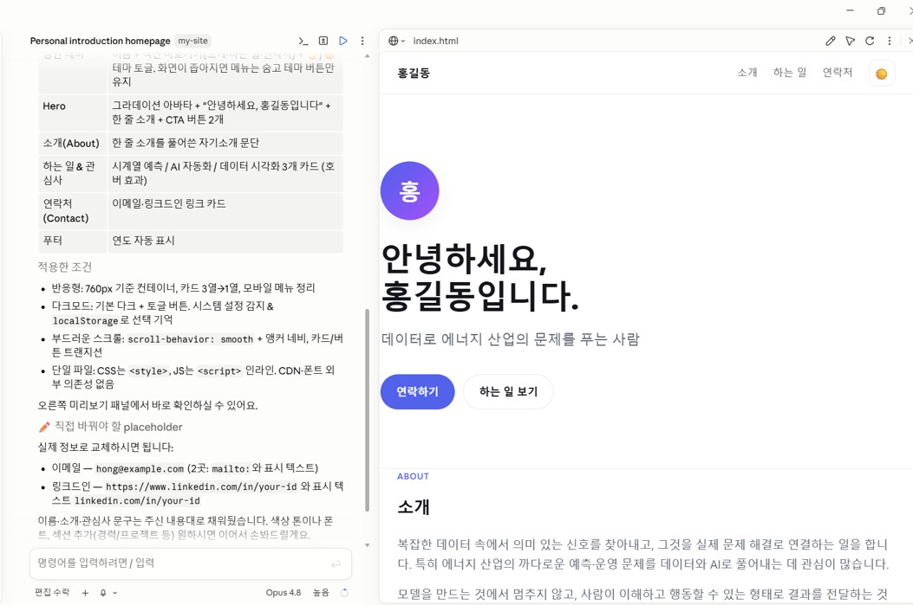
- Part 1의 프롬프트를 그대로 붙여 넣고 전송. 이름·소속·프로젝트·연락처 같은 실제 정보는 프롬프트 뒤에 이어서
- 마음에 안 드는 부분은 자연스러운 말로 고쳐 달라고 한다. 몇 번이든
전체 색상을 차분한 네이비 + 화이트 톤으로 바꿔줘.
다크모드 버튼을 오른쪽 위에 추가해줘.
"주요 프로젝트" 섹션을 카드 3개로 추가하고, 각 카드에 제목·한 줄 설명·링크를 넣어줘.
Part 3·4 · 파일로 받기, 그리고 GitHub 용어 4가지
GitHub: 코드·파일을 인터넷에 보관하고 공유하는 서비스. 실제 작업은 클릭 몇 번이면 충분하니, 뜻만 알아 두자.
| GitHub (깃허브) | 파일을 인터넷에 보관하고 공유하는 서비스. “파일용 클라우드 저장소” |
|---|---|
| Repository (저장소·레포) | 프로젝트 하나가 들어가는 폴더. 우리 사이트 파일(index.html)이 담길 공간 |
| Commit (커밋) | 변경 내용을 “이 시점의 저장본”으로 기록하는 것. 게임의 세이브 포인트와 비슷 |
| Push / Upload (업로드) | 내 파일을 GitHub 저장소로 올려보내는 것. 이 작업이 끝나야 인터넷에 반영된다 |
Part 4·5 · GitHub 가입과 저장소 만들기
github.com/signup에서 이메일로 가입, 무료(Free) 플랜. 인증 메일의 링크를 눌러 활성화
공개 URL에 그대로 들어간다. 예) dochon-lee → https://dochon-lee.github.io. 영문·숫자·하이픈만
우측 상단 + → New repository. 이름은 정확히 [내아이디].github.io, Public, “Add a README”는 끄고 빈 저장소로
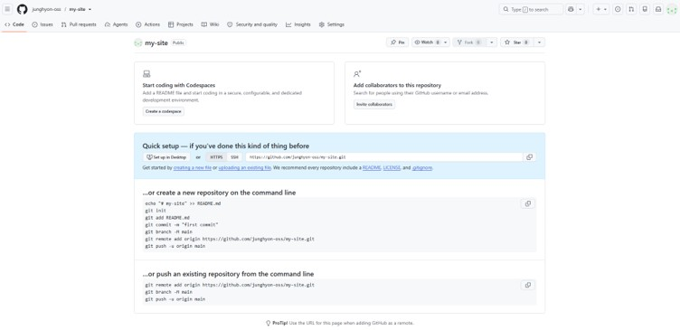
Part 6·7 · index.html 업로드 → GitHub Pages로 배포
방금 만든 저장소 화면에서 클릭. Part 3에서 저장한 index.html을 화면 위로 드래그
페이지 하단의 Commit changes 버튼을 눌러 저장을 마친다
저장소 상단 Settings → 왼쪽 메뉴 Pages. Branch를 main으로 고르고 Save. 1~2분 뒤 https://[내아이디].github.io 접속
바로 안 떠도 정상. 배포 후 URL이 반영되기까지 1~2분 걸린다. 잠시 기다렸다가 새로고침.
웹앱 만들기와 HTML 활용
정적인 소개 페이지 다음은 HTML 안에 실제 프로그램(계산·그래프)을 넣은 앱이다. 그리고 보고서·계획서·과제도 HTML로 만드는 이유.
HTML 파일 하나는 세 가지 언어로 되어 있다
<!doctype html>
<html>
<head>
<style>
button { background: skyblue; border-radius: 8px; }
</style>
</head>
<body>
<button id="hi">눌러보세요</button>
<script>
document.getElementById('hi').onclick = () => alert('안녕!');
</script>
</body>
</html>
무엇이 있는지: 제목, 버튼, 입력창 같은 요소. 위 예시에서는 “버튼이 하나 있다”
어떻게 보이는지: 색상, 크기, 배치. “하늘색 배경, 둥근 모서리”
무엇을 계산하고 무엇이 움직이는지. “누르면 알림창이 뜬다”. 서버 없이 내 브라우저 안에서 그대로 실행된다
게임도, 그래프도, 시뮬레이션도 이 재료로 만든다. 규모만 커질 뿐 원리는 같다. 이 강의자료의 슬라이드 넘기기도 JavaScript 몇십 줄이다.
실습 · 금융 플래너: 복리 그래프에서 몬테카를로 시뮬레이션까지
- 복리 계산 그래프: 연간 저축액·수익률·기간 슬라이더를 움직이면 원금 누적과 복리 총자산이 그래프로 바뀐다
- 몬테카를로 시뮬레이션: 매년 같은 수익률 대신, 실제 S&P 500의 1928~2024년 연간 수익률에서 무작위로 뽑아 수백 번 반복해 결과의 분포(하위 10% / 중앙값 / 상위 10%)를 본다
- 교육용 예시이며 투자 조언이 아니다. 과거 수익률이 미래를 보장하지 않는다
연간 저축액·수익률·기간을 슬라이더로 바꾸면 복리 그래프가 그려지는 금융 플래너를 HTML 한 파일로 만들어줘.
배포하고 내 사이트에 연결하기: 두 번째 저장소
완성한 플래너를 이번에도 index.html로 저장. 새 저장소의 대표 파일이 되기 때문
+ → New repository. 이번엔 이름을 자유롭게 (예: financial-planner). Public, README 없이
Upload files → Commit. Settings → Pages → Branch main → Save. 1~2분 뒤 https://[내아이디].github.io/financial-planner/
자기소개 사이트에 “금융 플래너 프로젝트 카드를 추가해줘”라고 요청하고, 같은 이름으로 다시 업로드(덮어쓰기)
저장소 하나 = 프로젝트 하나. 이렇게 프로젝트를 늘려 가면 개인 사이트가 곧 포트폴리오가 된다.
보고서도, 계획서도, 과제도 이제는 HTML로
HTML이 Markdown(또는 워드)보다 나은 다섯 가지 이유. Thariq Shihipar(Anthropic), “The Unreasonable Effectiveness of HTML”
- 정보 밀도: 표, 디자인, 그림, 인터랙티브 요소를 한 파일에
- 시각적 명확성: 100줄 넘는 글은 안 읽히지만, 탭·카드·내부 링크가 있는 페이지는 훑어 읽힌다
- 공유 용이성: 브라우저에서 바로 열리므로 첨부파일보다 실제로 읽힐 확률이 높다
- 양방향 인터랙션: 슬라이더·토글을 조작하고, 결과를 다시 AI에게 가져올 수 있다
- 풍부한 컨텍스트: 파일, 코드, 대화 기록을 그대로 살려 담는다
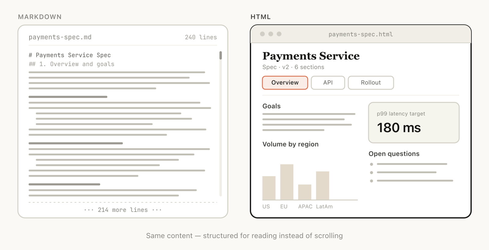
원문: claude.com/blog/using-claude-code-the-unreasonable-effectiveness-of-html · 한국어 소개와 예시: HTML의 압도적 효과성 (부트캠프 1주차)
실제로 만들어 본 예시 4가지: 클릭해서 열어 보자
인테리어 리모델링 제안서를 가격 데이터 중심 / 선택지 비교 / 비주얼 / 진행 로드맵의 4가지 스타일로 한 파일에 나란히
“리모델링 제안서를 4가지 버전으로 만들어서 한 HTML 안에 나란히 비교되게 해줘” ②문서 비교·설명: 계약서 수정본 한눈에공사 기간 60일→90일, 계약금 10%→30% 같은 중요 변경은 빨간색, 문구만 다듬은 곳은 초록색으로. 바뀐 이유를 옆에 설명
“계약서 수정 전/후를 비교하는 페이지. 중요한 변경은 빨간색, 문구만 다듬은 건 초록색으로” ③리포트·학습 자료: 제안서를 설명 페이지로상담·실측 → 디자인 확정 → 계약 → 시공 → 준공 흐름 다이어그램, 단계별 펼치기, 팀×단계 관여 그리드, “주의할 점”
“이 제안서를 읽고 전체 흐름 다이어그램이 있는 설명 페이지 하나로 만들어줘” ④커스텀 편집 도구: 역할 분담 보드팀원 4명에게 작업 6개를 배분하는 전용 보드. 화살표로 작업을 사람들 사이에서 옮기고, 결과를 Markdown으로 복사
“팀원 4명과 작업 6개를 좌우로 옮길 수 있는 역할 분담 보드를 만들어줘”범용 도구 대신, 지금 우리 팀의 사람 수와 작업 목록에 딱 맞는 전용 도구를 그때그때 만들어 쓴다.
한 걸음 더: “우리만을 위한 사이트”, 그리고 나만의 도메인
특정한 사람·상황만을 위한 맞춤 페이지를 만들어 링크 하나로 공유하면, 카톡·이메일·엑셀·캡처에 흩어져 있던 정보를 모두가 같은 화면에서 본다. 시중 협업 도구는 모두에게 맞추느라 내 상황엔 안 맞는 항목이 가득하지만, AI에게 부탁해 만드는 사이트는 딱 이 사건, 딱 이 회원에게만 맞춰져 있다. 만드는 데 몇 분이면 되니 필요 없어지면 버려도 아깝지 않다.
선택 · 나만의 도메인 연결: 방법을 미리 설명하지 않는다. 이 프롬프트로 물어보고 답을 따라 하는 것이 실습
내 GitHub Pages 사이트(https://[내아이디].github.io)에 Cloudflare로 내 도메인을 연결하고 싶어. 초보자 기준으로 순서대로 알려줘.
도메인은 유료(.com 연 1만 원 안팎). DNS 변경은 반영까지 최대 24~48시간.
크롤링: 무엇을, 어디까지 모을 수 있나
실습에 들어가기 전의 판단 기준. 웹에서 무엇을 모을 수 있는지, 어디까지 모아도 되는지, 사이트 구조에 따라 어떤 도구가 필요한지.
크롤링이란: 무엇을 모을 수 있나
크롤링(crawling)·스크래핑(scraping)은 웹페이지에 이미 공개되어 있는 정보를 구조화된 데이터(표·CSV·JSON)로 모으는 일이다. 사람이 브라우저로 읽는 것을 프로그램이 대신 읽고, 흩어진 내용을 분석 가능한 형태로 정리한다.
특정 이슈가 언제, 얼마나, 어떤 논조로 다뤄졌는지: 이슈 트렌드 분석
베스트셀러 순위, 가격 변동, 소비자 불만 키워드: 시장·소비자 분석
판결문에서 반복되는 인정 요건, 유사 선행 특허: 요건 분석·선행 조사
직무별 요구 스킬, 연봉 범위, 채용 수요의 변화: 노동시장 분석
특정 주제의 연구가 언제부터 급증했는지, 핵심 저자는 누구인지
사용자 여론, 반복되는 불만, 경쟁 제품과의 비교: 여론·VOC 분석
오늘 실제로 해 볼 것: 온라인 서점의 경제·경영 베스트셀러를 성별×연령대 조합별로 소량(239권) 수집해 “세대·성별에 따라 어떤 책을 읽는가”에 데이터로 답하고, 같은 방법을 판결문 895건에 적용한다.
법적·윤리적 경계: “긁을 수 있다”와 “긁어도 된다”는 다르다
구독·결제·로그인 장벽 뒤에 있는 콘텐츠(유료 기사, 구독형 DB, 전자책)의 자동 수집은 거의 예외 없이 약관에서 금지되어 있고, 접근 제한을 우회하는 행위 자체가 별도의 법적 문제(기술적 보호조치 침해, 부정 접근 등)를 일으킬 수 있다. 페이월이 보이면 대상에서 제외하는 것을 기본값으로.
공개된 페이지라도 약관에 “자동화된 수집 금지” 조항이 있는 사이트가 많다. 다만 약관이 곧 최종 결론은 아니다. 공정이용(fair use)까지 금지하는 약관 조항은 무효로 판단될 수 있다. 핵심은 내 수집이 공정이용에 해당하는지 스스로 평가하는 것.
본 자료는 일반적인 교육 안내이며, 구체적 사안에 대한 법률 자문이 아니다.
③ 그 밖의 기본 수칙: 비영리 · 소량 · 내부 분석
사이트 주소 뒤에 /robots.txt를 붙이면 수집 허용/금지 경로가 나온다. Cowork에 “이 사이트 robots.txt 확인해줘”
요청 사이에 간격을 두고, 필요한 만큼만. 오늘 실습도 그룹별 Top 20, 분석에 필요한 소량만
닉네임·프로필·작성자 정보도 개인정보일 수 있다. 분석에 불필요하면 수집 단계에서 제외(익명화)
수집 일시·URL·조건을 데이터와 함께 저장하면 연구 재현성과 인용 문제를 함께 해결
이 수업의 실습은 전부 “비영리 · 소량 · 내부 분석”의 범위 안에서 설계되어 있다. 각자 연구에 응용할 때도 이 세 단어를 기준으로.
정적 vs 동적: 사이트 구조에 따라 도구가 다르다
- 주소만 바꿔도 원하는 목록이 그대로 열린다 (페이지 번호, 검색 조건이 URL에 드러남)
- 정부·공공기관 게시판, 오래된 게시판형 사이트
- Cowork에 URL 규칙만 알려 주면 바로 수집
- 스크롤·클릭해야 내용이 나타나고 URL은 그대로
- SNS 피드, 쇼핑몰 리뷰 더보기, 지도, 로그인 화면
- 브라우저 확장(Claude in Chrome)으로. AI가 내 브라우저가 이미 그려낸 최종 화면을 읽고, 스크롤과 클릭도 대신한다
| Cowork 단독 수집 | 크롬 확장 수집 | |
|---|---|---|
| 읽는 대상 | 서버가 보내주는 HTML | 브라우저가 그려낸 최종 화면 |
| 맞는 사이트 | 정적: URL 규칙이 있는 목록 | 동적: 스크롤·클릭·로그인 화면 |
| 강점 | 대량·반복 수집, 백그라운드 실행 | 사람이 보는 것은 무엇이든 수집 |
| 유의점 | 동적 내용은 비어 있을 수 있음 | 내 계정·내 브라우저로 하는 일. 책임도 내 계정에 |
확인 방법: 주소창의 URL만 바꿔서(페이지 번호, 조건) 목록이 바로 열리면 정적. 스크롤하거나 버튼을 눌러야만 내용이 나타나고 URL은 그대로라면 동적.
Cowork로 웹 스크래핑: 복사–붙여넣기 수백 번 대신, 문장 하나
웹페이지를 일일이 복사해 엑셀에 붙여넣던 일을 “이 페이지에서 이런 정보를 뽑아 줘”로 끝낸다. 결과는 연동한 내 PC 폴더에 CSV로 남는다.
실습 대상: YES24 경제·경영 베스트셀러 (성별 × 연령대)
- 먼저
C:\claude아래에 실습용 폴더C:\claude\bestseller를 만들고, 데스크톱 앱에서 Cowork를 열어 이 폴더를 연동한다. 연동을 건너뛰면 수집은 성공해도 결과 파일이 클라우드에만 남아 내 PC에서 열 수 없다 - YES24 베스트셀러 목록은 URL의 파라미터로 조건이 표현되는, 스크래핑 입문에 좋은 구조다
…/bestseller?categoryNumber=001001025&pageNumber=1&pageSize=24&age=10&sex=F
→ “경제·경영 분야, 10대 여성 독자의 베스트셀러 1페이지”. age(10~60)와 sex(F/M)만 바꾸면 12개 그룹의 목록이 나온다. 주소만 바꿔도 목록이 통째로 열린다 = 정적으로 접근 가능하다는 신호. 이 URL 규칙은 AI가 스스로 알아내기도 하지만, 알려 주면 빠르다.
이 페이지의 베스트셀러를 성별×연령대 조합별로 Top 20씩 수집해서 연동 폴더에 bestseller.csv로 저장해줘. https://www.yes24.com/product/category/bestseller?categoryNumber=001001025&pageNumber=1&pageSize=24&age=10&sex=F
수집 프롬프트의 핵심 4요소, 그리고 결과는 파일로 남는다
무엇을 바꾸면 다른 목록이 나오는지
순위·제목·저자·출판사·출간월·판매가·평점
CSV / JSON. 엑셀용은 UTF-8 BOM
연동 폴더 안의 경로. 빠뜨리면 결과가 클라우드에만 남는다
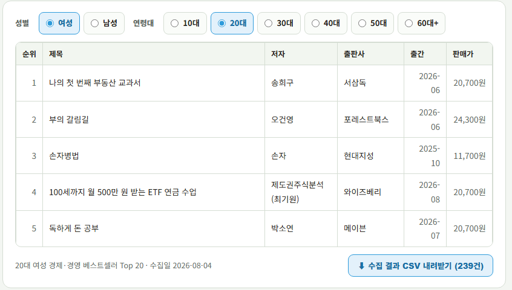
수집 후: 탐색적 분석(EDA)도 프롬프트 하나로
수집은 절반이다. 나머지 절반은 “이 데이터가 무슨 이야기를 하는가”를 찾는 탐색적 분석(Exploratory Data Analysis)이다.
수집한 베스트셀러 데이터로, 성별과 나이대별로 어떤 책을 선호하는지 보여주는 분석자료를 만들어보자.
지시는 이 정도면 충분하다. 유사도 행렬, 공통 도서, 키워드 분류 같은 분석 방법은 AI가 알아서 고른다. 결과를 보고 “성별 차이와 세대 차이 중 뭐가 더 커?”, “유사도 행렬은 평균을 흰색으로 두고 이질적인 그룹이 드러나게 다시 그려줘”처럼 후속 지시로 다듬는 것이 실제 작업 흐름이다.
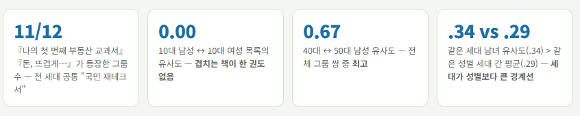
EDA 결과 (1): 모두가 읽는 책, 그리고 나이에 따른 주제 이동
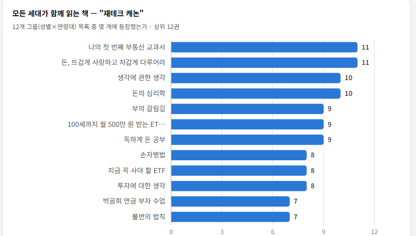
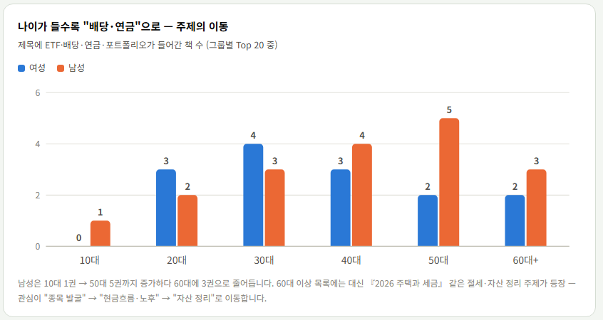
EDA 결과 (2): 성별 차이 vs 세대 차이
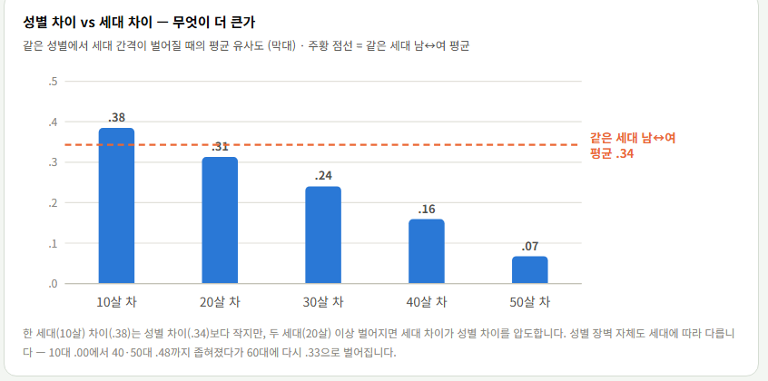
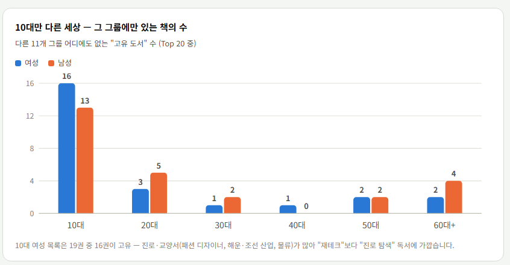
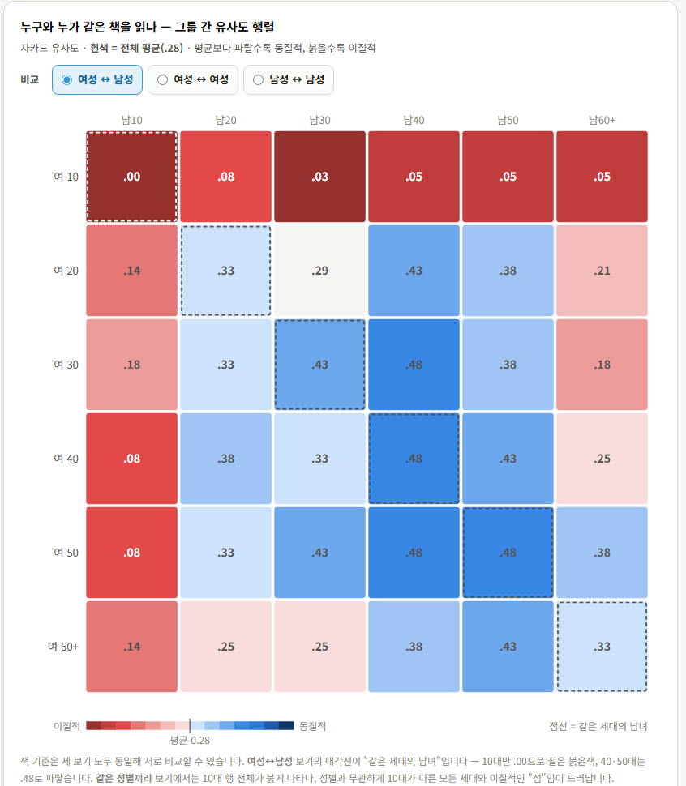
패턴 6가지: 숫자가 말해 주는 것
- 세대를 관통하는 캐논이 있다『나의 첫 번째 부동산 교과서』『돈, 뜨겁게 사랑하고 차갑게 다루어라』는 12개 그룹 중 11개 목록에 등장
- 10대는 완전히 다른 목록을 읽는다10대 남녀는 겹치는 책이 0권. 여학생은 진로·직업 탐색서, 남학생은 거시경제·산업·창업서
- 성별 차이보다 세대 차이가 크다같은 세대 남녀 .34 > 같은 성별 세대 간 .29. 단, 인접 세대(.38)는 성별 장벽보다 가깝다
- 나이가 오를수록 “연금·배당”으로, 60대엔 “자산 정리”로ETF·배당·연금 책은 남성 50대 5권까지 늘고 60대엔 절세·자산 정리가 들어온다
- AI 책은 오히려 중장년·고령 목록에 많다AI 교양서는 60대 이상 남성·50대 여성이 최다. 10대 남성은 AI를 “주식 자동매매 도구”로 소비
- 같은 데이터에서 후속 질문이 나온다“10대 목록은 누가(본인? 부모?) 구매한 것일까?” EDA의 끝은 결론이 아니라 더 좋은 질문
연구 적용: 판결문 895건 수집과 변환
같은 파이프라인(수집 → 분류 → 반복 패턴 추출)을 연구용 데이터에 적용한 사례. “직장 내 괴롭힘”이 언급된 지방법원 판결 895건을 수집해 유형별로 분류하고, 법원이 손해배상을 인정할 때 반복 적용하는 요건을 추출했다.
목록 먼저, 본문은 천천히: 세 단계로 나눠 요청한다
판결문처럼 본문이 긴 자료를 수백 건 수집할 때는 한 번에 긁지 않는다. ① 목록(메타데이터)만 먼저 CSV로, ② 본문 10건 정도만 받아 결과를 확인하고, ③ 문제가 없으면 30건씩 배치로 간격을 두고 반복한다.
검색 결과 목록(사건번호·법원·선고일·링크)만 먼저 rulings.csv로 저장해줘. 본문은 아직 받지 마.
rulings.csv에서 10건만 본문을 받아서 rulings/ 폴더에 법원_사건번호.txt로 저장해줘. 받은 행은 수집완료 표시해줘.
나머지는 30건씩 배치로 받아줘. 매 건마다 3초 간격을 두고, 30건을 받은 다음에는 5분 쉬었다가 다음 배치를 실행해.
본문을 마크다운(.md)으로 변환하며 요약도 함께
수집 직후의 .txt는 판결문이 한 덩어리 글이라 어디까지가 사실관계이고 어디부터가 법원의 판단인지 구분되지 않는다. 중간 제목을 붙여 구조를 드러내고, 어차피 전문을 읽는 김에 2줄 요약도 만들어 둔다.
# 서울중앙지방법원 2022가단5252694 ## 사건 개요 기숙학원 야간사감인 원고가 임금체불 진정 후… ## 법원의 판단 - 집단 따돌림에 해당한다고 판단 - 위자료 500만 원 인정
마크다운 = 글의 구조를 기호 몇 개(#, ##, -)로 표시하는 텍스트 형식. 메모장으로도 열리고, 사람도 AI도 “어디에 무엇이 있는지”를 구조로 파악한다.
rulings/의 txt 파일들을 md로 바꿔줘. 사실관계·주장·판단·결론이 나뉘는 곳마다 ## 제목을 붙이고, 맨 위에 2줄 요약을 넣어줘. 원문 문장은 바꾸지 말고.
요약을 이때 만드는 이유: 나중에 따로 시키면 같은 전문을 한 번 더 읽어야 해서 시간도 비용도 두 배. 이 2줄 요약은 §9 스킬의 재료가 된다.
수집 → 변환 → 분석 → 보고서
수집한 판결문에 대해 탐색적 분석을 하라. 목적은 직장 내 괴롭힘을 근거로 한 민사 손해배상 사건에서 괴롭힘으로 인정된 요건을 파악하는 것임.
이 지시 하나로 판결 895건 → 4개 사건유형 분류 → 인정 요건 ①~⑥ 도출 보고서가 나왔다. 분석의 목적만 지시했고, 요건 추출과 긍정/부정 사례 대비 같은 구성은 AI가 목적에 맞춰 스스로 발전시킨 것이다. 보고서: 직장 내 괴롭힘 민사 손해배상 인정 요건 분석 ↗
OpenRouter와 임베딩 추출: 판결문 347건을 숫자로
2강에서 본 임베딩(문서를 숫자 배열로)을 판결문에 실제로 적용한다. 여러 회사의 모델을 API 키 하나로 쓰게 해 주는 OpenRouter를 창구로 삼는다. 이번 시간에는 임베딩 모델만 쓴다.
임베딩이란: 비정형 데이터를 숫자로 요약하기 (2강 복습)
- 판결문 한 건은 평균 8,500자짜리 비정형 텍스트다. 통계도, 지도도, 유사도 계산도 텍스트 그대로는 불가능하다
- 2강의 인코더–디코더를 떠올리자. 인코더가 문장을 읽어 만든 “의미 요약 벡터”만 떼어 저장한 것이 임베딩이다. 오늘은 판결문 한 건이 4,096개의 숫자가 된다
- 비슷한 내용의 글은 비슷한 숫자가 되므로, 숫자 사이의 거리가 곧 의미의 거리가 된다. 모든 판결문에 좌표를 붙인다고 생각하면 된다. 쟁점이 비슷하면 이웃 동네
잠깐, API가 뭔가요? 그럼 API 키는?
지금까지 우리는 화면을 보고 클릭해서 AI를 썼다. claude.ai도 Cowork도 사람이 쓰라고 만든 창구다. API는 같은 서비스에 프로그램이 직접 요청하는 창구다. 프로그램이 “이 문장의 임베딩을 줘”라고 보내면 숫자 배열이 답으로 돌아온다. 판결문 347건의 임베딩을 화면에서 하나씩 복사·붙여넣기 할 수는 없기 때문에 필요하다.
| 사람용 창구 (웹 화면) | 프로그램용 창구 (API) | |
|---|---|---|
| 누가 쓰나 | 사람이 클릭하고 타이핑 | 프로그램이 자동으로 |
| 한 번에 | 한 건씩 | 수백·수천 건 |
| 신원 확인 | 아이디·비밀번호 로그인 | API 키 |
sk-or-v1-3f9a… 같은 길고 무작위한 문자열 하나가 곧 신분증이자 결제수단이다. 누구의 요청인지 식별하고, 그 계정의 크레딧에서 사용료를 차감한다.그래서 키를 아는 사람은 누구나 내 돈으로 호출할 수 있다. 비밀번호가 걸려 있지 않은 신용카드 번호에 가깝다. 화면이나 채팅에 붙여넣지 말고, 파일로 보관하고, 남에게 보내지 않는다.
OpenRouter: 임베딩을 뽑는 가장 편한 창구
임베딩 모델을 내 PC에서 직접 돌릴 수도 있지만, 비개발자에게는 API로 불러 쓰는 것이 훨씬 편하다. 여러 회사의 모델을 한곳에서 쓰게 해 주는 중개소가 OpenRouter다.
OpenAI·Google·Qwen 등 여러 회사 모델을 API 키 하나로 호출. 모델명 문자열만 바꾸면 모델이 바뀐다
미리 충전해 둔 금액에서 쓴 만큼만 차감. 월 구독이 아니라서 안 쓰면 안 나간다
사이트의 Activity에서 호출 건수와 비용이 그대로 조회된다. 실습 중 “돈이 얼마나 나가나”를 확인하는 창구
직접 해보기: 크레딧 충전과 API 키 발급
openrouter.ai에 가입(구글 계정 등으로 로그인 가능)한 뒤 아래 순서대로. 충전을 먼저, 키 발급을 나중에 하는 편이 편하다. 키를 만들 때 한도를 함께 정하기 때문이다.
계정 메뉴의 Credits에서 카드로 충전. 최소 구매 금액이 $5이며, 오늘 실습에는 그 이상이 필요 없다. 347건 임베딩이 약 2센트
이름은 나중에 알아볼 수 있게 itm690-week3처럼 용도를 적어 둔다. 문제가 생긴 키만 골라 폐기할 수 있다
사용 한도(credit limit)를 $1~2로 걸어 둔다. 코드가 잘못 돌거나 키가 유출돼도 피해가 이 금액 안에 묶인다
발급 직후 복사해서 연동 폴더의 openrouterkey.txt에 붙여 넣고 저장. 놓쳤다면 그 키는 지우고 새로 만든다
임베딩 모델 고르기: 컨텍스트 길이가 핵심
판결문 데이터로부터 임베딩을 뽑으려고 하는데, 적절한 모델을 비교해줘.
위 지시에 대한 답변 결과. 먼저 코퍼스를 실측했다: 347건 평균 8,492자, 최대 41,374자. 8,000자를 넘는 판결문이 절반 가까이라, 컨텍스트가 8K 토큰인 모델은 절반이 잘린다(한국어는 글자당 토큰 소모가 커서 더 심함). OpenRouter에서 실제로 조회된 선택지:
| 모델 (OpenRouter 슬러그) | 컨텍스트 | 단가 | 비고 |
|---|---|---|---|
qwen/qwen3-embedding-8b | 32K | $0.01/M | 선택: 길이·가격 모두 유리 |
google/gemini-embedding-001 | 20K | $0.15/M | |
openai/text-embedding-3-large | 8K | $0.13/M | 장문 판결문 절반이 잘림 |
baai/bge-m3 | 8K | $0.01/M |
모델 선택은 AI에게 맡겨도 된다. 다만 “실제로 존재하는 모델인지, 컨텍스트가 우리 문서 길이를 감당하는지 확인해 달라”고 함께 지시한다. 데이터 길이를 실측한 뒤 모델을 고르는 것이 순서다.
Cowork 파이프라인: 코드 한 줄 없이 요청 하나로
rulings/ 판결문 본문의 임베딩을 OpenRouter API로 뽑아서 판결문별 JSON 파일로 저장해줘. 키는 openrouterkey.txt에 있어.
실전 기록: 요청 한 줄 뒤에서 실제로 일어난 일들
코퍼스 전체 길이를 실측(평균 8,492자, 8천자 초과 다수)해 컨텍스트 8K 모델을 배제하고 32K 모델을 권장. 최장 판결문(24,250토큰)을 실제로 보내 절단 없이 과금되는지까지 확인
전량을 바로 돌리지 않고 5건으로 시험 실행 후 무결성을 검증: 차원 4,096 동일, 벡터 정규화 확인, 본문 벡터가 자기 개요와 가장 가까운지(정합성). 통과 후 본 배치: 347건, 13.8분, 실패 0건, 비용 약 2센트
AI의 보고를 그대로 믿는 대신 openrouter.ai의 Activity(사용 내역)를 열어 봤다. 호출이 실제로 나갔는지, 몇 건인지, 비용이 얼마나 빠져나갔는지가 그대로 보인다. AI의 보고는 외부 기록과 대조하면 가장 확실하다
덤: OpenRouter 홈페이지 아래쪽의 Rankings는 실제 API 호출량(토큰 기준)을 모델별로 집계한 순위표다. 벤치마크 점수가 아니라 사람들이 돈을 내고 실제로 쓴 양이라는 점이 다르다. 다만 순위 = 품질은 아니다. 가격이 싸면 호출량이 커진다.
산출물: 판결문 1건 = JSON 파일 1개, 그리고 활용
{
"id": "수원지방법원_2020가단8667",
"법원": "수원지방법원", "사건번호": "2020가단8667",
"선고일": "2021. 4. 21.", "심급": "1심", "소송결과": "원고일부승",
"body_chars": 2263, "body_tokens": 1607,
"embedding_model": "qwen/qwen3-embedding-8b",
"embedding_dim": 4096, "normalized": true,
"body_embedding": [-0.01119, -0.00574, 0.03813, …], // 4,096개
"summary": "원고가 노동조합 조합장인 피고를 상대로 … 위자료
1,000만 원을 인정하였으나, 직장 내 괴롭힘 주장은 증거 부족으로 배척.",
"summary_embedding": [-0.03728, -0.00944, …] // 4,096개
}
데이터 분석: 판결문 347건의 지도
임베딩 JSON 347개를 실제로 분석한 기록. 클러스터링으로 다섯 개의 사건 유형을 찾고, 차원축소로 한 장의 지도를 그렸다. 점 하나가 판결 한 건이다.
분석 요청과 처리 순서: 요청은 두 문장
앞 섹션의 JSON 347개(서지 정보 + 4,096차원 본문 벡터 + 요약문)가 연동 폴더에 있다. 파일을 따로 올릴 필요 없이, Cowork에 그 폴더의 파일을 쓰라고 지시하면 된다.
연동 폴더의 판결문 임베딩 JSON 파일들로 클러스터링 + 차원축소 + 시각화를 하고, 이 과정을 html로 작성해줘.
클러스터링: 비슷한 판결끼리 자동으로 묶기, 몇 개로?
- K-means는 “서로 가까운 벡터끼리 k개의 그룹으로 나누라”는 알고리즘. 사람이 정할 것은 하나, 몇 개의 그룹(k)으로 나눌 것인가
- 실루엣 계수: 군집이 얼마나 또렷하게 나뉘었는지를 재는 값(−1~1). 같은 군집 안의 점들과 가까울수록, 다른 군집과 멀수록 1에 가깝다. 계산은 AI가 하므로 값을 읽고 판단하는 것만 알면 된다
| k | 3 | 4 | 5 (선택) | 6 | 7 | 8 | 9 | 10 |
|---|---|---|---|---|---|---|---|---|
| 실루엣 | .124 | .123 | .100 | .093 | .102 | .107 | .103 | .102 |
차원축소: 4,096차원을 2차원 지도로
4,096개의 숫자는 사람 눈으로 볼 수 없다. UMAP은 “고차원에서 이웃이던 점은 2차원에서도 이웃이 되도록” 좌표를 다시 배치하는 알고리즘이다.
둥근 지구를 평평한 종이에 옮기면 어딘가는 반드시 일그러진다. 4,096차원 → 2차원도 같다. 이웃 관계는 지키고, 먼 거리의 정확성은 포기한다
“가까이 붙은 점들은 정말 비슷하다”는 믿어도 된다. “두 섬 사이의 거리가 정확히 2배 멀다”는 믿으면 안 된다
UMAP·K-means 모두 무작위 초기화가 있어 실행마다 모양이 조금씩 달라진다. 연구에서는 난수 시드를 고정해 같은 그림이 다시 나오게 한다
판결문 347건의 의미 지도
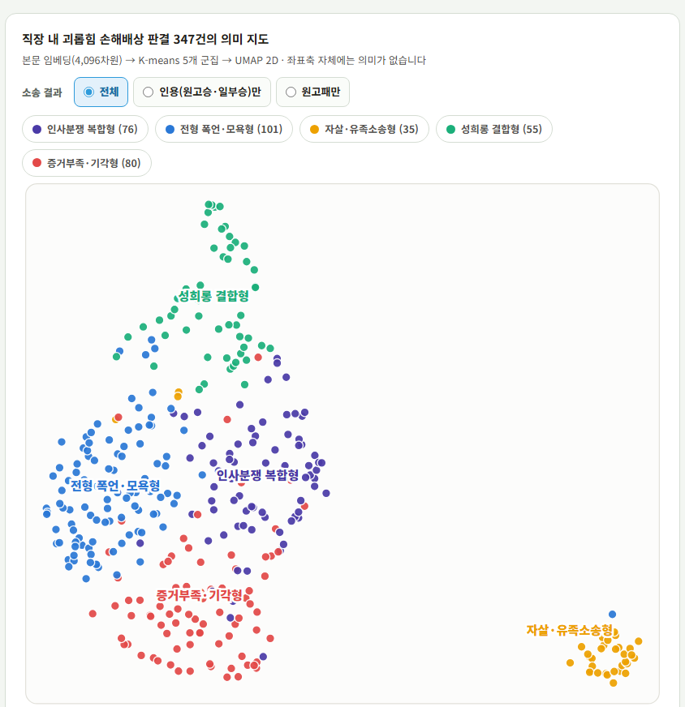
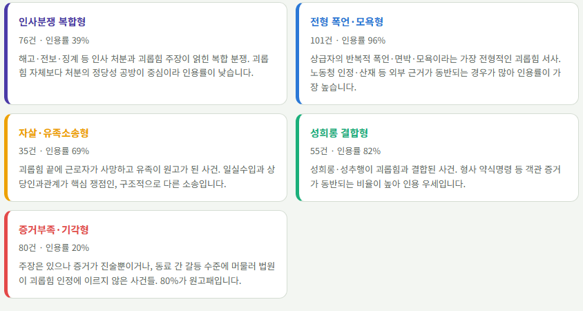
지도 읽기: 사건 유형이 승패를 예고한다
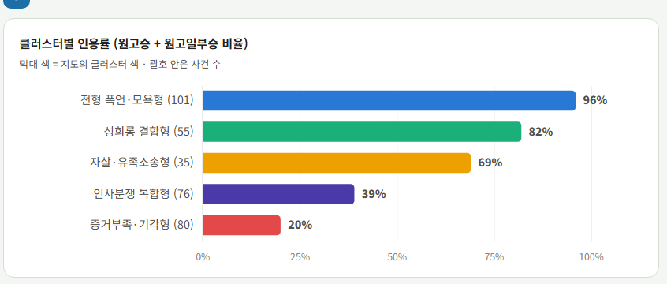
- 클러스터가 소송 결과와 함께 나뉘었다상급자의 폭언·모욕이라는 전형적 서사는 인용률 96%, 증거가 진술뿐이거나 동료 갈등에 머문 사건은 20%. 임베딩은 승패를 배운 적이 없는데도 사실관계의 유형만으로 결과가 갈리는 구조를 드러냈다
- 자살·유족소송은 외딴 섬이다유족이 원고이고 일실수입·인과관계가 쟁점인, 구조가 다른 사건. 임베딩이 이 차이를 정확히 분리했다
- 판결문 임베딩은 “사실 + 판단 논리”를 함께 담는다기각형 클러스터는 “증거만으로는 인정하기 어렵다”는 기각 논리의 문장들이 닮았기 때문이기도 하다. 무엇을 임베딩했는지에 따라 지도의 의미가 달라진다
- 경계는 흐릿하다. 지도는 가설이다패턴을 확정하려면 지도가 가리킨 사건들의 판결문 원문으로 돌아가 직접 확인하는 것이 다음 순서
여러분의 데이터로 같은 지도를: 재현용 프롬프트
리뷰·초록·기사 무엇이든, 임베딩 JSON만 있으면 같은 지도를 만들 수 있다. 데이터만 바뀔 뿐 절차는 동일하다.
연동 폴더의 임베딩 JSON으로 클러스터링하고 지도처럼 시각화해줘. 바로 실행하지 말고 계획부터 보여줘.
- 클러스터링은 원본 고차원 벡터에서2D 좌표는 표시용으로만
- k는 실루엣 계수 + 대표 문서 읽기해석 가능성으로 결정
- UMAP 지도에서 믿을 것은 “이웃”믿지 말 것은 “먼 거리”
- 지도가 보여준 패턴은 가설확인은 원문으로
- “바로 실행하지 말고 계획부터”선택지를 보고 내가 고른다. 오늘 배운 요청 습관
나만의 스킬 만들기: 반복 절차를 SKILL.md 한 장에
직장 내 괴롭힘 사건을 담당하는 인사 담당자라고 해 보자. 수집한 판결문 347건이 폴더에 있고, 사건이 생길 때마다 “이런 경우도 회사 책임이 인정됐나”를 확인해야 한다. 그 반복을 파일 한 장으로 만든다.
스킬이란: AI에게 주는 업무 매뉴얼
이 절차의 약점: 질문할 때마다 사람이 이 지시를 다시 써야 한다. 하루 지나 한 줄(“요지만 보고 답하지 마”)을 빼먹으면 답변 품질이 조용히 떨어진다. 스킬(Skill)은 이 절차를 파일로 저장해 AI에게 넘겨주는 장치다. 한 번 설치하면 관련 질문이 올 때마다 자동으로 발동된다.
SKILL.md 해부: 파일 하나의 구조, 그리고 언제 읽히나
case-qa/ ← 스킬 폴더 ├── SKILL.md ← 필수. 발동 조건 + 절차 └── 답변예시.md ← 선택. 절차가 참조하는 딸린 자료
| name | 영문 소문자·숫자·하이픈만, 64자 이내. 예: case-qa |
|---|---|
| description | 무엇을 하는 스킬인지 + 언제 쓰는지를 함께. 자동 발동의 판단 기준이 되는 가장 중요한 한 문장 |
스킬은 언제 읽히나: 3단계 로딩
| 단계 | 언제 읽히나 | 무엇이 읽히나 |
|---|---|---|
| ① 목록 | 항상 | 스킬의 이름과 한 줄 설명만. “이런 매뉴얼이 있다”는 목차 |
| ② 본문 | 질문이 설명과 맞을 때 | SKILL.md 본문(절차 전체) |
| ③ 딸린 파일 | 절차가 지시할 때 | 스킬 폴더에 같이 넣어 둔 참고 문서·스크립트 |
스킬을 여러 개 설치해도 AI가 느려지지 않는 이유. “목차는 항상 보고, 본문은 골라 읽는다”는 방식은 우리가 세운 질의응답 절차(요지 훑기 → 고른 사건만 전문 읽기)와 같은 원리다.
실전: 판례 QA 스킬 만들기. SKILL.md도 손으로 쓸 필요가 없다
직장 내 괴롭힘 판례 질문에 답하는 스킬을 만들어줘. 요약 CSV를 먼저 훑고, 고른 사건은 전문을 읽고 사건번호를 인용해서 답하게.
--- name: case-qa description: 직장 내 괴롭힘 판례 코퍼스(347건)에 대한 질문에 답할 때 사용한다. 판례, 판결문, 손해배상 인정 여부, 위자료, 사건 유형 등을 묻는 질문이 오면 이 절차대로 요지를 훑고 전문을 인용해 답한다. --- # 판례 두 단계 질의응답 ## 절차 1. 작업 폴더의 `rulings_summary.csv`(347건 2줄 요약)를 읽고, 질문과 관련된 사건을 고른다. 2. 고른 사건은 **반드시** `rulings/` 폴더에서 판결문 전문 파일을 읽는다. 요지만 보고 답하지 않는다. 3. 전문을 근거로 답한다. 인정 사건과 기각 사건이 함께 있으면 갈림길이 된 사정을 대비해서 설명한다. 4. 관련 사건이 코퍼스에 없으면 "근거 사건 없음"이라고 답한다. ## 답변 형식 - 근거는 [법원명 사건번호] 형태로 표기한다. - 판시 대목은 짧게 직접 인용한다. - 마지막에 참고한 사건 목록을 정리한다.
판단 기준까지 스킬에 담기: “찾기”에서 “판단하기”로
지금 만든 스킬에는 데이터밖에 없다. “요지를 훑고 전문을 읽어라”는 어디서 찾을지를 정한 절차이지, 무엇을 기준으로 판단할지는 정하지 않았다. 그 기준은 이미 문서로 나와 있다.
고용노동부의 직장 내 괴롭힘 판단·예방·대응 매뉴얼처럼, 행위 요건과 판단 절차를 정리한 공식 문서
노동연구원·학회 등에서 판례를 분석해 인정 요건과 쟁점을 체계화한 자료
취업규칙·징계 양정 기준·조사 절차 규정. 우리 조직에서 실제로 적용되는 기준
폴더에 넣어 둔 가이드라인과 연구보고서를 읽고 직장 내 괴롭힘 판단 요건과 검토 순서를 정리해서, case-qa 스킬이 그 기준에 따라 사건을 짚어보고 판례와 대조하도록 고쳐줘. 기준의 출처도 밝히게.
실전 사례: 7년 치 컬럼 83편을 스킬 파일 한 장으로
| 0. 지면 컨텍스트 | 분량 제약을 절대 조건으로: 2,000자 이내, 40~43문장, 문장당 45~48자 |
|---|---|
| 1. 문체 | 종결어미 실측 분포: “~있다/없다” 724회, “~것이다” 292회. 역접은 “하지만”(193회)이 “그러나”(25회)를 압도. 주어는 “우리” 300회 vs “필자” 14회 |
| 2. 논증 방식 | 장점 먼저, 위험은 다음. 반론 처리 3단계(주장 → 물론/하지만으로 반론 인정 → 재확인) |
| 3. 구조 | 훅 → 현상 정의 → 사례 → 쟁점 → 대안 → 매듭의 6블록 표준 구조와 구간별 목표 자수. 제목 공식(10~22자) |
| 4~9. | 사실엔 출처 병기, 불확실하면 “[확인 필요]” 표시. 제출 전 11항목 체크리스트, 도입·결말 문장 모음, 시스템 프롬프트 템플릿 |
재료는 중앙일보 연재 「김병필의 인공지능 개척시대」(2019.01~2026.03, 83회). 사람이 자기 문체를 이렇게 수치로 설명하기는 어렵다. 7년의 습관이 AI에게는 셀 수 있는 데이터였다. 반복해 온 글쓰기(보고서, 이메일, 리뷰)가 있다면 같은 방법이 통한다. 같은 지침 파일이라도 모델마다 재현도가 다르므로 작업 성격에 따라 모델을 골라 쓴다.
논문 계보도 만들기: 인용 관계를 네트워크로
판결문에서는 임베딩으로 문서 사이의 거리를 그렸다. 같은 파이프라인(수집 → 구조화 → 시각화)을 다른 관계, 논문의 인용 관계 위에 얹는다. 연구 질문 “AI는 인간 노동을 대체하는가?”를 둘러싼 노동경제학 대표 문헌 23편.
방법: 네트워크의 구성 요소와 수집 전략
분석 단위 하나. 오늘은 논문 1편. 점의 크기에 인용 규모 같은 속성을 실을 수 있다
두 노드의 관계. 오늘은 “A가 B를 인용한다”는 방향 있는 관계. 시간축과 결합하면 흐름이 보인다
노드를 그룹(오늘은 연구 갈래)별로 색칠하면 네트워크의 구조가 한눈에 드러난다
내 연구 질문은 "AI가 인간 노동력을 대체하는가"야. 주요 논문과 그 뿌리 논문을 모아 인용 관계를 시간축 계보도로 그려줘.
계보도: “AI는 노동을 대체하는가” 23편의 지도
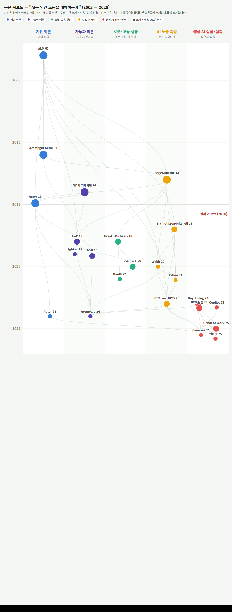
- 모든 길은 과업(task) 모형으로 통한다Autor·Levy·Murnane(2003)의 “직업이 아니라 과업이 자동화된다”는 프레임이 20년 뒤 생성형 AI 연구까지 관통하는 공통 조상
- 2016년 전후: 예측의 시대Frey & Osborne의 “47% 자동화 위험”이 알파고 쇼크와 함께 논쟁을 점화했고, Autor(2015)가 보완성 반론을 제기. 대체 vs 보완 구도가 여기서 만들어진다
- 2018~2020: 이론과 로봇 실증Acemoglu & Restrepo가 대체효과 vs 신과업 창출을 모형화하고, 산업 로봇 데이터로 지역 노동시장 효과를 실증
- 측정의 정교화“어떤 직업이 AI에 노출되는가”를 재는 방법이 전문가 판단 → 특허 텍스트 → LLM 자체 평가(“GPTs are GPTs”)로 진화
- 2023~2026: 실험에서 실측으로무작위 실험이 “생산성은 오르고 격차는 줄어든다”를 보였고, 2025년 실제 고용 데이터에서 초기경력 고용 감소가 보고되며 논쟁은 관측의 단계로
계보도는 도구다: 후속 프롬프트 한 번이면 계획이 나온다
위 계보도를 근거로, 비전공자인 내가 8주 안에 이 분야를 따라잡는 읽기 순서를 짜줘. 그리고 인용 화살표가 아직 닿지 않은 열린 연구 질문 3개를 제안해줘.
- 1~2주 지형 파악: Autor 2015 · A&R 2019 (둘 다 리뷰 논문). “대체 vs 보완” 쟁점 지도
- 3~4주 뿌리: ALM 2003 · A&R 2018. 과업 모형의 언어
- 5~6주 방법: Frey·Osborne → Webb → Eloundou, 그리고 A&R 로봇 2020. 노출 측정의 진화와 인과 실증 설계
- 7~8주 최전선: 실험(생산성)과 실측(고용)의 결과가 어디서 갈리는지. 내 연구 질문이 설 자리
- 미국(초기경력 고용 감소)과 덴마크(효과 미미)의 증거가 상반된다. 한국 노동시장에서는 누가 맞는가? 필요한 데이터: 고용보험 등 행정 데이터 + 한국형 AI 노출 지수
- 실험은 “생산성”을, 실측은 “고용”을 본다. 그 사이 기업 안에서 과업이 어떻게 재편되는가는 비어 있다. 채용 공고 텍스트의 시계열(§5의 스크래핑으로 수집 가능)
- 초기경력 충격이 사실이라면 경력 사다리와 인적자본 축적의 장기 효과는? 청년 패널의 장기 추적
여기에 “한국 기관 문헌(한국은행, 노동연구원, KDI)은 이 계보의 어느 갈래를 인용했고 무엇이 아직 수입되지 않았나”를 물으면 국내 문헌 검토와 연구 포지셔닝이 이어진다. 문헌 리서치의 산출물이 목록이 아니라 계획이 되는 순간이다.
정리와 과제
오늘 배운 것을 한 장으로 정리하고, 다음 시간(10/1 수강생 발표 1)에 발표할 과제를 확인한다.
3강 정리
- 에이전틱 AI모델은 텍스트만 만들고, 하네스가 도구를 실행한다. 결과는 컨텍스트에 쌓이고, 계획–실행–검토가 반복된다
- 세 개의 작업대Chat은 묻는 곳, Cowork는 맡기는 곳, Code는 내 컴퓨터에서 돌리는 곳. 작업은 전용 폴더 안에서만, 승인은 읽고 누른다
- GitHub 기초저장소 = 프로젝트 폴더, 커밋 = 저장본, 푸시 = 올리기. [내아이디].github.io 저장소에 index.html을 올리면 사이트가 된다
- 웹앱과 HTMLHTML(뼈대)·CSS(겉모습)·JavaScript(동작)가 파일 하나에. 보고서·계획서·맞춤 페이지도 HTML로
- 크롤링의 경계페이월 금지, 약관은 최종 결론이 아니며 공정이용으로 스스로 평가. 비영리·소량·내부 분석. 정적은 URL로, 동적은 브라우저 확장으로
- 웹 스크래핑프롬프트의 4요소(URL 규칙·항목·형식·위치). 표는 CSV, 본문은 개별 파일. 목록 먼저, 10건 확인, 30건씩 배치. 수집 직후 EDA
- OpenRouter와 임베딩API 키 하나로 여러 모델. 한도를 걸고 파일로 보관. 문서 길이를 실측해 모델을 고르고, 시험 5건 후 본 배치, 사이트에서 비용 확인
- 판결문 지도임베딩 → K-means(k는 해석 가능성으로) → UMAP(이웃만 믿기) → 지도는 가설, 확인은 원문으로
- 스킬반복 절차를 SKILL.md 한 장에. description이 절반. 판단 기준 문서를 넣으면 “찾기”에서 “판단하기”로
- 논문 계보도씨앗 → 조상 → 후예로 수집해 시간축 네트워크로. 후속 프롬프트 한 번이면 읽기 순서와 열린 질문이 나온다
과제: 다음 시간(10/1 수강생 발표 1)에 발표한다
- §2의 방법으로 만들어 GitHub Pages에 공개한 주소를 제출한다
- 자기소개가 아니어도 된다. 사례집, 프로젝트 현황판, 행사 안내처럼 링크 하나로 공유하는 정적 페이지면 된다. 예: kaist-itm-casebook
- 발표 시 무엇을 요청했고 결과를 보고 무엇을 고쳐 달라고 했는지 프롬프트 흐름을 함께 보여 준다
- 관심 분야의 공개 데이터를 §5의 방법으로 수집하고, EDA로 패턴을 찾아 HTML 자료로 정리한다
- 특별히 하고 싶은 주제가 없으면: 관심 있는 회사의 특허를 내려받아 특허 지도 그리기. §7~8의 방법(임베딩 → 클러스터링 → 지도)을 그대로 적용한다
- 특허 지도 예시: jumpingkoala.com/atlas ↗. 필요하면 이 예시 사이트를 참조하라고 AI에게 지시하면 된다
- §4의 경계(페이월 금지, 비영리·소량·내부 분석, 서버 배려)를 지킨다